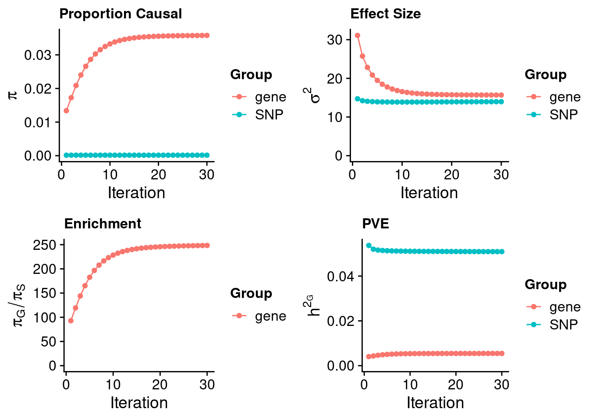

LDL - Liver
sheng Qian
2022-10-18
Last updated: 2023-01-23
Checks: 5 2
Knit directory: cTWAS_analysis/
This reproducible R Markdown analysis was created with workflowr (version 1.7.0). The Checks tab describes the reproducibility checks that were applied when the results were created. The Past versions tab lists the development history.
The R Markdown is untracked by Git. To know which version of the R Markdown file created these results, you’ll want to first commit it to the Git repo. If you’re still working on the analysis, you can ignore this warning. When you’re finished, you can run wflow_publish to commit the R Markdown file and build the HTML.
Great job! The global environment was empty. Objects defined in the global environment can affect the analysis in your R Markdown file in unknown ways. For reproduciblity it’s best to always run the code in an empty environment.
The command set.seed(20211220) was run prior to running the code in the R Markdown file. Setting a seed ensures that any results that rely on randomness, e.g. subsampling or permutations, are reproducible.
Great job! Recording the operating system, R version, and package versions is critical for reproducibility.
Nice! There were no cached chunks for this analysis, so you can be confident that you successfully produced the results during this run.
Using absolute paths to the files within your workflowr project makes it difficult for you and others to run your code on a different machine. Change the absolute path(s) below to the suggested relative path(s) to make your code more reproducible.
| absolute | relative |
|---|---|
| /project2/xinhe/shengqian/cTWAS/cTWAS_analysis/data/ | data |
| /project2/xinhe/shengqian/cTWAS/cTWAS_analysis/code/ctwas_config_b38.R | code/ctwas_config_b38.R |
Great! You are using Git for version control. Tracking code development and connecting the code version to the results is critical for reproducibility.
The results in this page were generated with repository version 7bfdf38. See the Past versions tab to see a history of the changes made to the R Markdown and HTML files.
Note that you need to be careful to ensure that all relevant files for the analysis have been committed to Git prior to generating the results (you can use wflow_publish or wflow_git_commit). workflowr only checks the R Markdown file, but you know if there are other scripts or data files that it depends on. Below is the status of the Git repository when the results were generated:
Ignored files:
Ignored: .Rhistory
Ignored: .ipynb_checkpoints/
Untracked files:
Untracked: Proposal plots.R
Untracked: RGS14.pdf
Untracked: RNF186.pdf
Untracked: SCZ_annotation.xlsx
Untracked: SLC8B1.pdf
Untracked: analysis/.ipynb_checkpoints/
Untracked: analysis/LDL_Liver_GTEX.Rmd
Untracked: cache/
Untracked: code/.ipynb_checkpoints/
Untracked: code/LDL_out/LDL_Liver_GTEX.err
Untracked: code/LDL_out/LDL_Liver_GTEX.out
Untracked: code/LDL_out/LDL_Liver_mashr.err
Untracked: code/LDL_out/LDL_Liver_mashr.out
Untracked: code/LDL_out/LDL_Liver_mashr_lite.err
Untracked: code/LDL_out/LDL_Liver_mashr_lite.out
Untracked: code/run_LDL_analysis_single_test.sbatch
Untracked: code/run_LDL_analysis_single_test.sh
Untracked: code/run_LDL_ctwas_rss_LDR_single_test.R
Untracked: data/.ipynb_checkpoints/
Untracked: data/FUMA_output/
Untracked: data/GO_Terms/
Untracked: data/GTEx_Analysis_v8_eQTL.tar
Untracked: data/IBD_ME/
Untracked: data/LDL/
Untracked: data/LDL_E_S/
Untracked: data/LDL_M/
Untracked: data/LDL_S/
Untracked: data/LDL_multi/
Untracked: data/PGC3_SCZ_wave3_public.v2.tsv
Untracked: data/SCZ/
Untracked: data/SCZ_2014_EUR/
Untracked: data/SCZ_2014_EUR_ME/
Untracked: data/SCZ_2018/
Untracked: data/SCZ_2018_ME/
Untracked: data/SCZ_2018_S/
Untracked: data/SCZ_2020/
Untracked: data/SCZ_S/
Untracked: data/Supplementary Table 15 - MAGMA.xlsx
Untracked: data/Supplementary Table 20 - Prioritised Genes.xlsx
Untracked: data/UKBB/
Untracked: data/UKBB_SNPs_Info.text
Untracked: data/eqtl/
Untracked: data/gene_OMIM.txt
Untracked: data/gene_pip_0.8.txt
Untracked: data/gwas_sumstats/
Untracked: data/magma.genes.out
Untracked: data/mashr_Heart_Atrial_Appendage.db
Untracked: data/mashr_sqtl/
Untracked: data/mqtl/
Untracked: data/multigroup/
Untracked: data/notes.txt
Untracked: data/scz_2018.RDS
Untracked: data/summary_known_genes_annotations.xlsx
Untracked: temp_LDR/
Untracked: top_genes_32.txt
Untracked: top_genes_37.txt
Untracked: top_genes_43.txt
Untracked: top_genes_54.txt
Untracked: top_genes_81.txt
Untracked: z_snp_pos_SCZ.RData
Untracked: z_snp_pos_SCZ_2014_EUR.RData
Untracked: z_snp_pos_SCZ_2018.RData
Untracked: z_snp_pos_SCZ_2020.RData
Unstaged changes:
Deleted: analysis/BMI_S_results.Rmd
Modified: analysis/index.Rmd
Deleted: code/run_IBD_ctwas_rss_LDR_ME.R
Note that any generated files, e.g. HTML, png, CSS, etc., are not included in this status report because it is ok for generated content to have uncommitted changes.
There are no past versions. Publish this analysis with wflow_publish() to start tracking its development.
Weight QC
[1] 11502[1] 3347
1 2 3 4 5 6 7 8 9 10 11 12 13 14 15 16 17 18 19 20
324 225 166 135 135 217 173 111 134 134 210 187 61 100 109 185 195 46 258 94
21 22
48 100 [1] 1Load ctwas results
Check convergence of parameters

gene snp
0.001440 0.003578 gene snp
13.96 15.68 [1] 0.4026[1] 343621[1] 3347 8696600 gene snp
0.0001959 1.4201059 [1] 1.42 gene
0.0001379 Genes with highest PIPs
#distribution of PIPs
hist(ctwas_gene_res$susie_pip, xlim=c(0,1), main="Distribution of Gene PIPs")#genes with PIP>0.8 or 20 highest PIPs
head(ctwas_gene_res[order(-ctwas_gene_res$susie_pip),report_cols], max(sum(ctwas_gene_res$susie_pip>0.8), 20)) genename region_tag susie_pip mu2 PVE z num_eqtl
4433 PSRC1 1_67 1.0000 823.87 2.398e-03 -41.793 1
9251 ZNF329 19_39 0.9942 106.53 3.082e-04 10.436 1
10708 NYNRIN 14_3 0.9921 53.33 1.540e-04 7.679 1
1597 PLTP 20_28 0.9921 56.81 1.640e-04 -5.732 1
NA.396 <NA> 8_12 0.9902 77.05 2.220e-04 10.465 1
11257 CYP2A6 19_28 0.9891 30.54 8.790e-05 5.407 1
9365 GAS6 13_62 0.9873 65.49 1.882e-04 -8.924 1
6774 PKN3 9_66 0.9859 45.73 1.312e-04 -6.621 1
5988 FADS1 11_34 0.9711 145.75 4.119e-04 12.675 1
NA.392 <NA> 1_121 0.9682 189.43 5.337e-04 -15.074 1
9046 KLHDC7A 1_13 0.9634 19.65 5.510e-05 4.124 1
9054 SPTY2D1 11_13 0.9459 31.38 8.637e-05 -5.587 1
1309 FMO2 1_84 0.9347 25.01 6.802e-05 4.838 1
2092 SP4 7_19 0.9196 93.93 2.514e-04 10.701 1
9827 PALM3 19_11 0.9143 18.64 4.960e-05 3.839 1
2454 ST3GAL4 11_77 0.9113 73.45 1.948e-04 11.734 1
6855 ALDH16A1 19_34 0.9009 27.97 7.334e-05 -4.119 1
10459 PRMT6 1_66 0.9008 30.36 7.958e-05 -5.374 1
8418 GNB2 7_62 0.9002 27.56 7.220e-05 5.813 1
1320 CWF19L1 10_64 0.8948 32.86 8.558e-05 5.707 1
7350 BRI3 7_60 0.8845 26.39 6.793e-05 -5.067 1
697 PIGB 15_24 0.8805 17.59 4.507e-05 3.665 1
7918 PDHB 3_40 0.8665 25.15 6.342e-05 3.304 1
3714 SLC2A4RG 20_38 0.8626 30.41 7.635e-05 -5.563 1
3659 GNMT 6_33 0.8575 26.56 6.628e-05 5.058 1
7542 LIPC 15_26 0.8485 63.23 1.561e-04 -7.731 1
1114 SRRT 7_62 0.8396 28.50 6.963e-05 5.938 1
10429 PNP 14_1 0.8284 17.49 4.216e-05 -3.575 1
NA.395 <NA> 5_78 0.8280 17.74 4.276e-05 -3.817 1
4669 SCYL2 12_59 0.8229 17.54 4.200e-05 -3.564 1
7092 NEK10 3_20 0.8183 21.58 5.140e-05 -4.089 1Genes with largest effect sizes
#plot PIP vs effect size
plot(ctwas_gene_res$susie_pip, ctwas_gene_res$mu2, xlab="PIP", ylab="mu^2", main="Gene PIPs vs Effect Size")
#genes with 20 largest effect sizes
head(ctwas_gene_res[order(-ctwas_gene_res$mu2),report_cols],20) genename region_tag susie_pip mu2 PVE z num_eqtl
10399 LPA 6_104 0.000e+00 13352.87 0.000e+00 6.319 1
5797 SLC22A3 6_104 0.000e+00 9690.02 0.000e+00 -6.225 1
4433 PSRC1 1_67 1.000e+00 823.87 2.398e-03 -41.793 1
NA.139 <NA> 6_104 0.000e+00 430.46 0.000e+00 -8.475 1
3270 ALDH6A1 14_34 2.732e-01 263.13 2.092e-04 4.361 1
5166 PTGR2 14_34 4.395e-04 256.75 3.284e-07 -3.091 1
5375 GEMIN7 19_31 0.000e+00 251.13 0.000e+00 14.336 1
8026 PCSK9 1_34 9.971e-05 238.01 6.907e-08 16.079 1
4315 ANGPTL3 1_39 9.475e-02 204.00 5.625e-05 15.169 1
NA.392 <NA> 1_121 9.682e-01 189.43 5.337e-04 -15.074 1
NA.397 <NA> 8_83 1.112e-01 164.21 5.314e-05 17.282 1
8700 ABO 9_70 7.330e-02 149.53 3.190e-05 12.100 1
10549 HLA-DMA 6_27 5.937e-03 145.77 2.518e-06 -2.364 1
5988 FADS1 11_34 9.711e-01 145.75 4.119e-04 12.675 1
2077 ATP13A1 19_15 5.775e-01 134.05 2.253e-04 -13.541 1
10926 FADS3 11_34 2.877e-02 111.20 9.310e-06 11.074 1
9251 ZNF329 19_39 9.942e-01 106.53 3.082e-04 10.436 1
2092 SP4 7_19 9.196e-01 93.93 2.514e-04 10.701 1
9025 EFCAB13 17_27 3.299e-01 92.58 8.889e-05 10.027 1
4047 NECTIN2 19_31 0.000e+00 91.26 0.000e+00 5.825 1Genes with highest PVE
#genes with 20 highest pve
head(ctwas_gene_res[order(-ctwas_gene_res$PVE),report_cols],20) genename region_tag susie_pip mu2 PVE z num_eqtl
4433 PSRC1 1_67 1.0000 823.87 2.398e-03 -41.793 1
NA.392 <NA> 1_121 0.9682 189.43 5.337e-04 -15.074 1
5988 FADS1 11_34 0.9711 145.75 4.119e-04 12.675 1
9251 ZNF329 19_39 0.9942 106.53 3.082e-04 10.436 1
2092 SP4 7_19 0.9196 93.93 2.514e-04 10.701 1
2077 ATP13A1 19_15 0.5775 134.05 2.253e-04 -13.541 1
NA.396 <NA> 8_12 0.9902 77.05 2.220e-04 10.465 1
3270 ALDH6A1 14_34 0.2732 263.13 2.092e-04 4.361 1
2454 ST3GAL4 11_77 0.9113 73.45 1.948e-04 11.734 1
9365 GAS6 13_62 0.9873 65.49 1.882e-04 -8.924 1
6090 CSNK1G3 5_75 0.7883 72.62 1.666e-04 8.881 1
1597 PLTP 20_28 0.9921 56.81 1.640e-04 -5.732 1
7542 LIPC 15_26 0.8485 63.23 1.561e-04 -7.731 1
10708 NYNRIN 14_3 0.9921 53.33 1.540e-04 7.679 1
6774 PKN3 9_66 0.9859 45.73 1.312e-04 -6.621 1
9025 EFCAB13 17_27 0.3299 92.58 8.889e-05 10.027 1
11257 CYP2A6 19_28 0.9891 30.54 8.790e-05 5.407 1
9054 SPTY2D1 11_13 0.9459 31.38 8.637e-05 -5.587 1
1320 CWF19L1 10_64 0.8948 32.86 8.558e-05 5.707 1
10459 PRMT6 1_66 0.9008 30.36 7.958e-05 -5.374 1Genes with largest z scores
#genes with 20 largest z scores
head(ctwas_gene_res[order(-abs(ctwas_gene_res$z)),report_cols],20) genename region_tag susie_pip mu2 PVE z num_eqtl
4433 PSRC1 1_67 1.000e+00 823.87 2.398e-03 -41.79 1
NA.397 <NA> 8_83 1.112e-01 164.21 5.314e-05 17.28 1
8026 PCSK9 1_34 9.971e-05 238.01 6.907e-08 16.08 1
4315 ANGPTL3 1_39 9.475e-02 204.00 5.625e-05 15.17 1
NA.392 <NA> 1_121 9.682e-01 189.43 5.337e-04 -15.07 1
5375 GEMIN7 19_31 0.000e+00 251.13 0.000e+00 14.34 1
2077 ATP13A1 19_15 5.775e-01 134.05 2.253e-04 -13.54 1
5988 FADS1 11_34 9.711e-01 145.75 4.119e-04 12.67 1
11016 APOC2 19_31 0.000e+00 88.82 0.000e+00 -12.21 1
8700 ABO 9_70 7.330e-02 149.53 3.190e-05 12.10 1
2454 ST3GAL4 11_77 9.113e-01 73.45 1.948e-04 11.73 1
10926 FADS3 11_34 2.877e-02 111.20 9.310e-06 11.07 1
6183 POC5 5_44 1.441e-02 75.86 3.181e-06 10.86 1
2092 SP4 7_19 9.196e-01 93.93 2.514e-04 10.70 1
NA.396 <NA> 8_12 9.902e-01 77.05 2.220e-04 10.46 1
9251 ZNF329 19_39 9.942e-01 106.53 3.082e-04 10.44 1
2094 DNAH11 7_19 5.080e-02 88.49 1.308e-05 10.23 1
8523 TNKS 8_12 1.744e-01 66.86 3.394e-05 10.13 1
9025 EFCAB13 17_27 3.299e-01 92.58 8.889e-05 10.03 1
9910 RHCE 1_18 7.008e-02 89.44 1.824e-05 10.02 1Comparing z scores and PIPs
#set nominal signifiance threshold for z scores
alpha <- 0.05
#bonferroni adjusted threshold for z scores
sig_thresh <- qnorm(1-(alpha/nrow(ctwas_gene_res)/2), lower=T)
#Q-Q plot for z scores
obs_z <- ctwas_gene_res$z[order(ctwas_gene_res$z)]
exp_z <- qnorm((1:nrow(ctwas_gene_res))/nrow(ctwas_gene_res))
plot(exp_z, obs_z, xlab="Expected z", ylab="Observed z", main="Gene z score Q-Q plot")
abline(a=0,b=1)#plot z score vs PIP
plot(abs(ctwas_gene_res$z), ctwas_gene_res$susie_pip, xlab="abs(z)", ylab="PIP")
abline(v=sig_thresh, col="red", lty=2)#number of significant z scores
sum(abs(ctwas_gene_res$z) > sig_thresh)[1] 113#proportion of significant z scores
mean(abs(ctwas_gene_res$z) > sig_thresh)[1] 0.03376#genes with most significant z scores
head(ctwas_gene_res[order(-abs(ctwas_gene_res$z)),report_cols],20) genename region_tag susie_pip mu2 PVE z num_eqtl
4433 PSRC1 1_67 1.000e+00 823.87 2.398e-03 -41.79 1
NA.397 <NA> 8_83 1.112e-01 164.21 5.314e-05 17.28 1
8026 PCSK9 1_34 9.971e-05 238.01 6.907e-08 16.08 1
4315 ANGPTL3 1_39 9.475e-02 204.00 5.625e-05 15.17 1
NA.392 <NA> 1_121 9.682e-01 189.43 5.337e-04 -15.07 1
5375 GEMIN7 19_31 0.000e+00 251.13 0.000e+00 14.34 1
2077 ATP13A1 19_15 5.775e-01 134.05 2.253e-04 -13.54 1
5988 FADS1 11_34 9.711e-01 145.75 4.119e-04 12.67 1
11016 APOC2 19_31 0.000e+00 88.82 0.000e+00 -12.21 1
8700 ABO 9_70 7.330e-02 149.53 3.190e-05 12.10 1
2454 ST3GAL4 11_77 9.113e-01 73.45 1.948e-04 11.73 1
10926 FADS3 11_34 2.877e-02 111.20 9.310e-06 11.07 1
6183 POC5 5_44 1.441e-02 75.86 3.181e-06 10.86 1
2092 SP4 7_19 9.196e-01 93.93 2.514e-04 10.70 1
NA.396 <NA> 8_12 9.902e-01 77.05 2.220e-04 10.46 1
9251 ZNF329 19_39 9.942e-01 106.53 3.082e-04 10.44 1
2094 DNAH11 7_19 5.080e-02 88.49 1.308e-05 10.23 1
8523 TNKS 8_12 1.744e-01 66.86 3.394e-05 10.13 1
9025 EFCAB13 17_27 3.299e-01 92.58 8.889e-05 10.03 1
9910 RHCE 1_18 7.008e-02 89.44 1.824e-05 10.02 1SNPs with highest PIPs
#snps with PIP>0.8 or 20 highest PIPs
head(ctwas_snp_res[order(-ctwas_snp_res$susie_pip),report_cols_snps],
max(sum(ctwas_snp_res$susie_pip>0.8), 20)) id region_tag susie_pip mu2 PVE z
70338 rs1042034 2_13 1.0000 244.90 7.127e-04 16.5730
70344 rs934197 2_13 1.0000 414.29 1.206e-03 33.0609
72074 rs780093 2_16 1.0000 170.40 4.959e-04 -14.1426
324246 rs115740542 6_20 1.0000 164.34 4.783e-04 -12.5323
367370 rs12208357 6_103 1.0000 256.54 7.466e-04 12.2823
367473 rs60425481 6_104 1.0000 56798.34 1.653e-01 -7.1125
677728 rs369107859 14_34 1.0000 1054.21 3.068e-03 -2.2480
756650 rs113408695 17_39 1.0000 151.01 4.395e-04 12.7688
790508 rs73013176 19_9 1.0000 247.13 7.192e-04 -16.2327
800345 rs62117204 19_31 1.0000 826.47 2.405e-03 -44.6722
800363 rs111794050 19_31 1.0000 784.25 2.282e-03 -33.5996
800396 rs814573 19_31 1.0000 2276.75 6.626e-03 55.5379
800398 rs113345881 19_31 1.0000 795.97 2.316e-03 -34.3186
800401 rs12721109 19_31 1.0000 1379.27 4.014e-03 -46.3258
857431 rs11591147 1_34 1.0000 1261.29 3.671e-03 -39.1649
930791 rs67138090 6_27 1.0000 954.13 2.777e-03 4.4111
793039 rs3794991 19_15 1.0000 425.19 1.237e-03 -21.4921
756676 rs8070232 17_39 1.0000 165.98 4.830e-04 -8.0915
961976 rs28601761 8_83 1.0000 343.47 9.996e-04 -25.2552
70289 rs11679386 2_12 1.0000 146.11 4.252e-04 11.9094
70424 rs1848922 2_13 1.0000 234.65 6.829e-04 25.4123
70347 rs548145 2_13 1.0000 679.15 1.976e-03 33.0860
494792 rs2437818 9_53 1.0000 73.44 2.137e-04 6.3340
503009 rs115478735 9_70 1.0000 315.06 9.169e-04 19.0118
1072634 rs1800961 20_28 1.0000 74.44 2.166e-04 -8.8970
800736 rs150262789 19_32 1.0000 78.19 2.276e-04 -10.8985
755734 rs1801689 17_38 1.0000 83.33 2.425e-04 9.3964
800059 rs73036721 19_30 1.0000 60.20 1.752e-04 -7.7879
729965 rs12149380 16_38 1.0000 115.92 3.373e-04 -4.1646
442304 rs4738679 8_45 1.0000 110.81 3.225e-04 -11.6999
275773 rs1499279 5_30 1.0000 64.00 1.862e-04 -8.3746
78139 rs72800939 2_28 1.0000 57.36 1.669e-04 -7.8457
790546 rs137992968 19_9 1.0000 117.64 3.424e-04 -10.7526
387614 rs217396 7_32 1.0000 79.20 2.305e-04 -9.4286
7646 rs79598313 1_18 1.0000 48.08 1.399e-04 7.0246
440909 rs140753685 8_42 1.0000 57.09 1.662e-04 7.7992
800104 rs62115478 19_30 1.0000 188.25 5.478e-04 -14.3262
53653 rs2807848 1_112 1.0000 56.76 1.652e-04 -7.8828
348807 rs9496567 6_67 1.0000 39.84 1.159e-04 -6.3402
324225 rs72834643 6_20 0.9999 46.24 1.346e-04 -6.0487
961992 rs112875651 8_83 0.9999 304.15 8.851e-04 -24.2936
320517 rs11376017 6_13 0.9999 67.28 1.958e-04 -8.5079
790572 rs4804149 19_10 0.9998 47.41 1.379e-04 6.5194
793070 rs113619686 19_15 0.9997 57.28 1.667e-04 0.5939
324979 rs454182 6_22 0.9997 38.89 1.131e-04 4.7791
857494 rs499883 1_34 0.9997 203.10 5.909e-04 16.1075
78003 rs139029940 2_27 0.9997 39.73 1.156e-04 6.8150
367561 rs374071816 6_104 0.9996 10391.13 3.023e-02 16.2541
730008 rs57186116 16_38 0.9995 69.52 2.022e-04 7.7146
790537 rs1569372 19_9 0.9995 294.46 8.565e-04 10.0055
790625 rs322144 19_10 0.9994 60.64 1.764e-04 3.9466
540086 rs17875416 10_71 0.9994 38.89 1.131e-04 -6.2663
606070 rs7397189 12_36 0.9991 34.92 1.015e-04 -5.7710
282225 rs7701166 5_44 0.9991 35.36 1.028e-04 -2.4848
494765 rs2297400 9_53 0.9990 41.87 1.217e-04 6.6057
790529 rs147985405 19_9 0.9988 2357.05 6.851e-03 -48.9352
792679 rs2302209 19_14 0.9984 43.94 1.277e-04 6.6360
430636 rs1495743 8_20 0.9981 41.86 1.216e-04 -6.5160
582921 rs3135506 11_70 0.9960 151.40 4.389e-04 12.3730
582926 rs75542613 11_70 0.9958 36.39 1.054e-04 -6.5344
815140 rs76981217 20_24 0.9956 35.66 1.033e-04 7.6925
442272 rs56386732 8_45 0.9955 35.08 1.016e-04 -7.0123
735460 rs2255451 16_48 0.9948 37.91 1.097e-04 -6.3628
325416 rs3130253 6_23 0.9943 30.54 8.837e-05 5.6415
622062 rs653178 12_67 0.9938 98.63 2.853e-04 11.0501
610436 rs148481241 12_44 0.9911 27.97 8.067e-05 5.0955
282166 rs10062361 5_44 0.9896 210.17 6.053e-04 20.3206
801656 rs838145 19_33 0.9881 101.19 2.910e-04 -11.8738
790532 rs3745677 19_9 0.9881 94.85 2.728e-04 9.3358
140939 rs709149 3_9 0.9874 37.15 1.068e-04 -6.7820
326201 rs28780090 6_24 0.9870 50.85 1.461e-04 6.8714
147585 rs9834932 3_24 0.9825 66.67 1.906e-04 -8.4816
815091 rs6029132 20_24 0.9824 40.06 1.145e-04 -6.7625
729741 rs4396539 16_37 0.9817 27.62 7.890e-05 -5.2329
626151 rs11057830 12_76 0.9772 26.35 7.493e-05 4.9296
403432 rs3197597 7_61 0.9771 29.60 8.418e-05 -5.0452
815144 rs73124945 20_24 0.9761 32.33 9.185e-05 -7.7754
800719 rs34942359 19_32 0.9738 64.16 1.818e-04 -7.0096
245580 rs114756490 4_100 0.9714 26.44 7.474e-05 4.9889
387664 rs141379002 7_33 0.9684 26.15 7.368e-05 4.8970
469253 rs7024888 9_3 0.9630 26.10 7.315e-05 -5.0558
222851 rs1458038 4_54 0.9621 53.64 1.502e-04 -7.4179
591553 rs11048034 12_9 0.9611 36.81 1.030e-04 6.1337
477117 rs1556516 9_16 0.9603 75.21 2.102e-04 -8.9921
822861 rs62219001 21_2 0.9601 26.60 7.432e-05 -4.9484
759809 rs4969183 17_44 0.9533 50.03 1.388e-04 7.1693
927792 rs1064173 6_26 0.9499 52.05 1.439e-04 -8.8560
620155 rs1196760 12_63 0.9492 26.28 7.260e-05 -4.8667
625016 rs1169300 12_74 0.9475 69.45 1.915e-04 8.6855
78019 rs4076834 2_27 0.9436 442.31 1.215e-03 -20.1086
78016 rs13430143 2_27 0.9435 83.77 2.300e-04 -3.3445
324064 rs75080831 6_19 0.9422 57.91 1.588e-04 -7.9067
325387 rs28986304 6_23 0.9373 42.43 1.157e-04 7.3825
730006 rs9652628 16_38 0.9277 129.58 3.499e-04 11.9505
367364 rs9456502 6_103 0.9179 33.68 8.998e-05 5.9640
746193 rs117859452 17_17 0.9175 24.78 6.617e-05 -3.8517
426313 rs117037226 8_11 0.9160 24.54 6.543e-05 4.1922
800636 rs377297589 19_32 0.9157 51.49 1.372e-04 -6.7865
566550 rs6591179 11_36 0.9154 25.26 6.730e-05 4.8933
70341 rs78610189 2_13 0.9130 60.60 1.610e-04 -8.3855
195374 rs5855544 3_120 0.9113 24.38 6.465e-05 -4.5937
171757 rs189174 3_74 0.9056 42.02 1.107e-04 6.7678
507959 rs10905277 10_8 0.9020 28.31 7.430e-05 5.1258
197161 rs36205397 4_4 0.9000 40.00 1.048e-04 6.1594
725849 rs821840 16_30 0.8993 168.52 4.410e-04 -13.4753
351543 rs12199109 6_73 0.8992 25.50 6.673e-05 4.8570
539797 rs12244851 10_70 0.8962 37.68 9.827e-05 -4.8831
806414 rs74273659 20_5 0.8961 24.89 6.491e-05 4.6468
790613 rs322125 19_10 0.8921 106.99 2.778e-04 -7.4704
635038 rs1012130 13_10 0.8902 41.65 1.079e-04 -2.7810
830102 rs2835302 21_16 0.8845 25.69 6.613e-05 -4.6537
494785 rs2777788 9_53 0.8840 60.76 1.563e-04 -5.7370
579190 rs201912654 11_59 0.8771 40.82 1.042e-04 -6.3056
199386 rs2002574 4_10 0.8765 25.08 6.396e-05 -4.5583
746102 rs3032928 17_17 0.8682 34.31 8.670e-05 6.1119
818643 rs10641149 20_32 0.8662 27.58 6.952e-05 5.0758
123036 rs7569317 2_120 0.8656 43.94 1.107e-04 7.9007
485103 rs11144506 9_35 0.8568 27.27 6.800e-05 5.0427
70141 rs6531234 2_12 0.8466 42.67 1.051e-04 -7.1708
282189 rs3843482 5_44 0.8451 411.33 1.012e-03 25.0344
815109 rs6102034 20_24 0.8450 98.60 2.425e-04 -11.1900
751321 rs4793601 17_28 0.8449 30.91 7.601e-05 -6.2095
813885 rs11167269 20_21 0.8437 59.11 1.451e-04 -7.7950
790582 rs58495388 19_10 0.8431 34.55 8.476e-05 5.5313
357746 rs9321207 6_86 0.8339 31.20 7.572e-05 5.4016
756661 rs9303012 17_39 0.8332 160.79 3.899e-04 2.2591
98706 rs138192199 2_69 0.8266 26.18 6.297e-05 4.6708
903214 rs9884390 4_48 0.8254 70.41 1.691e-04 8.9764
842190 rs145678077 22_17 0.8219 25.69 6.145e-05 -4.8686
635030 rs1799955 13_10 0.8215 73.57 1.759e-04 -6.6936
801631 rs62130338 19_33 0.8116 45.35 1.071e-04 8.4694
831239 rs149577713 21_19 0.8034 30.13 7.044e-05 3.3168
729946 rs12708919 16_38 0.8026 146.26 3.416e-04 11.3028
234747 rs138204164 4_77 0.8016 27.00 6.299e-05 -4.8489
497363 rs2762469 9_56 0.8003 25.88 6.029e-05 -4.5317SNPs with largest effect sizes
#plot PIP vs effect size
#plot(ctwas_snp_res$susie_pip, ctwas_snp_res$mu2, xlab="PIP", ylab="mu^2", main="SNP PIPs vs Effect Size")
#SNPs with 50 largest effect sizes
head(ctwas_snp_res[order(-ctwas_snp_res$mu2),report_cols_snps],50) id region_tag susie_pip mu2 PVE z
367469 rs3106169 6_104 6.626e-01 56850 1.096e-01 11.139
367470 rs3127598 6_104 4.734e-01 56850 7.833e-02 11.135
367478 rs3106167 6_104 4.782e-01 56850 7.911e-02 11.136
367462 rs11755965 6_104 5.697e-02 56833 9.422e-03 11.140
367473 rs60425481 6_104 1.000e+00 56798 1.653e-01 -7.113
367453 rs12194962 6_104 2.482e-10 56713 4.096e-11 11.106
367471 rs3127597 6_104 5.989e-12 56676 9.877e-13 11.145
367432 rs3119311 6_104 0.000e+00 41129 0.000e+00 8.031
367426 rs3127579 6_104 0.000e+00 29946 0.000e+00 7.568
367420 rs10945658 6_104 0.000e+00 26200 0.000e+00 8.309
367419 rs3119308 6_104 0.000e+00 26136 0.000e+00 8.274
367415 rs3103352 6_104 0.000e+00 26135 0.000e+00 8.522
367411 rs3101821 6_104 0.000e+00 26044 0.000e+00 8.528
367417 rs12205178 6_104 0.000e+00 25988 0.000e+00 8.297
367409 rs148015788 6_104 0.000e+00 25657 0.000e+00 8.351
367520 rs3124784 6_104 0.000e+00 21492 0.000e+00 9.680
367521 rs3127596 6_104 0.000e+00 19498 0.000e+00 9.556
367514 rs3127599 6_104 0.000e+00 19405 0.000e+00 9.259
367484 rs2481030 6_104 0.000e+00 18643 0.000e+00 4.811
367449 rs2504949 6_104 0.000e+00 15359 0.000e+00 2.937
367502 rs388170 6_104 0.000e+00 14217 0.000e+00 3.833
367424 rs316013 6_104 0.000e+00 13630 0.000e+00 -3.002
367425 rs316012 6_104 0.000e+00 13466 0.000e+00 -3.074
367505 rs9355288 6_104 0.000e+00 13158 0.000e+00 6.319
367413 rs610206 6_104 0.000e+00 12446 0.000e+00 -2.944
367414 rs595374 6_104 0.000e+00 12422 0.000e+00 -2.921
367421 rs315995 6_104 0.000e+00 12119 0.000e+00 -3.207
367418 rs543435 6_104 0.000e+00 12073 0.000e+00 -3.250
367467 rs452867 6_104 0.000e+00 11366 0.000e+00 -7.124
367476 rs367334 6_104 0.000e+00 11358 0.000e+00 -7.106
367464 rs589931 6_104 0.000e+00 11356 0.000e+00 -7.116
367465 rs600584 6_104 0.000e+00 11356 0.000e+00 -7.113
367466 rs434953 6_104 0.000e+00 11356 0.000e+00 -7.111
367472 rs380498 6_104 0.000e+00 11356 0.000e+00 -7.115
367440 rs3119312 6_104 0.000e+00 10900 0.000e+00 3.771
367561 rs374071816 6_104 9.996e-01 10391 3.023e-02 16.254
367499 rs2872317 6_104 0.000e+00 9987 0.000e+00 6.746
367496 rs2313453 6_104 0.000e+00 9980 0.000e+00 6.718
367566 rs4252185 6_104 3.618e-04 9573 1.008e-05 15.878
367487 rs146184004 6_104 0.000e+00 9536 0.000e+00 6.534
367490 rs624319 6_104 0.000e+00 9395 0.000e+00 -6.291
367489 rs637614 6_104 0.000e+00 9381 0.000e+00 -6.362
367491 rs486339 6_104 0.000e+00 9317 0.000e+00 -6.311
367436 rs316036 6_104 0.000e+00 9142 0.000e+00 -7.009
367488 rs555754 6_104 0.000e+00 9076 0.000e+00 -6.593
367567 rs12212146 6_104 0.000e+00 7282 0.000e+00 -2.410
367434 rs582280 6_104 0.000e+00 7051 0.000e+00 2.635
367433 rs497039 6_104 0.000e+00 7049 0.000e+00 2.634
367620 rs1247539 6_104 0.000e+00 5711 0.000e+00 -4.294
367517 rs9346818 6_104 0.000e+00 5710 0.000e+00 7.950SNPs with highest PVE
#SNPs with 50 highest pve
head(ctwas_snp_res[order(-ctwas_snp_res$PVE),report_cols_snps],50) id region_tag susie_pip mu2 PVE z
367473 rs60425481 6_104 1.00000 56798.3 0.1652936 -7.1125
367469 rs3106169 6_104 0.66256 56850.4 0.1096180 11.1387
367478 rs3106167 6_104 0.47818 56849.8 0.0791115 11.1356
367470 rs3127598 6_104 0.47345 56849.9 0.0783293 11.1347
367561 rs374071816 6_104 0.99964 10391.1 0.0302291 16.2541
367462 rs11755965 6_104 0.05697 56832.9 0.0094222 11.1396
790529 rs147985405 19_9 0.99882 2357.0 0.0068514 -48.9352
800396 rs814573 19_31 1.00000 2276.8 0.0066258 55.5379
800401 rs12721109 19_31 1.00000 1379.3 0.0040139 -46.3258
857431 rs11591147 1_34 1.00000 1261.3 0.0036706 -39.1649
677728 rs369107859 14_34 1.00000 1054.2 0.0030679 -2.2480
930791 rs67138090 6_27 1.00000 954.1 0.0027767 4.4111
800345 rs62117204 19_31 1.00000 826.5 0.0024052 -44.6722
800398 rs113345881 19_31 1.00000 796.0 0.0023164 -34.3186
800363 rs111794050 19_31 1.00000 784.3 0.0022823 -33.5996
70347 rs548145 2_13 1.00000 679.1 0.0019764 33.0860
677737 rs2159704 14_34 0.47971 1048.1 0.0014632 1.2852
930681 rs9275698 6_27 0.50855 931.1 0.0013780 -0.6590
793039 rs3794991 19_15 1.00000 425.2 0.0012374 -21.4921
78019 rs4076834 2_27 0.94362 442.3 0.0012146 -20.1086
70344 rs934197 2_13 1.00000 414.3 0.0012056 33.0609
282189 rs3843482 5_44 0.84507 411.3 0.0010116 25.0344
961976 rs28601761 8_83 1.00000 343.5 0.0009996 -25.2552
677745 rs7144134 14_34 0.71924 444.1 0.0009296 4.3724
677725 rs7156583 14_34 0.30166 1048.2 0.0009202 1.2485
503009 rs115478735 9_70 1.00000 315.1 0.0009169 19.0118
961992 rs112875651 8_83 0.99990 304.2 0.0008851 -24.2936
790537 rs1569372 19_9 0.99946 294.5 0.0008565 10.0055
367370 rs12208357 6_103 1.00000 256.5 0.0007466 12.2823
790508 rs73013176 19_9 1.00000 247.1 0.0007192 -16.2327
70338 rs1042034 2_13 1.00000 244.9 0.0007127 16.5730
931247 rs2859088 6_27 0.25401 925.4 0.0006841 -0.7222
70424 rs1848922 2_13 1.00000 234.6 0.0006829 25.4123
931229 rs2858883 6_27 0.23764 924.7 0.0006395 -0.7327
282166 rs10062361 5_44 0.98964 210.2 0.0006053 20.3206
857494 rs499883 1_34 0.99970 203.1 0.0005909 16.1075
800104 rs62115478 19_30 1.00000 188.3 0.0005478 -14.3262
72074 rs780093 2_16 1.00000 170.4 0.0004959 -14.1426
756676 rs8070232 17_39 1.00000 166.0 0.0004830 -8.0915
324246 rs115740542 6_20 1.00000 164.3 0.0004783 -12.5323
367384 rs3818678 6_103 0.77137 208.6 0.0004683 -9.9478
725849 rs821840 16_30 0.89926 168.5 0.0004410 -13.4753
756650 rs113408695 17_39 1.00000 151.0 0.0004395 12.7688
582921 rs3135506 11_70 0.99605 151.4 0.0004389 12.3730
70289 rs11679386 2_12 1.00000 146.1 0.0004252 11.9094
756661 rs9303012 17_39 0.83316 160.8 0.0003899 2.2591
677735 rs72627160 14_34 0.12361 1046.8 0.0003766 1.2216
306767 rs12657266 5_92 0.75928 163.1 0.0003604 13.8948
730006 rs9652628 16_38 0.92771 129.6 0.0003499 11.9505
790546 rs137992968 19_9 1.00000 117.6 0.0003424 -10.7526SNPs with largest z scores
#histogram of (abs) SNP z scores
hist(abs(ctwas_snp_res$z))#SNPs with 50 largest z scores
head(ctwas_snp_res[order(-abs(ctwas_snp_res$z)),report_cols_snps],50) id region_tag susie_pip mu2 PVE z
800396 rs814573 19_31 1.000e+00 2276.8 6.626e-03 55.54
790529 rs147985405 19_9 9.988e-01 2357.0 6.851e-03 -48.94
790524 rs73015020 19_9 7.011e-04 2344.2 4.783e-06 -48.80
790522 rs138175288 19_9 3.239e-04 2342.4 2.208e-06 -48.78
790523 rs138294113 19_9 7.623e-05 2338.7 5.188e-07 -48.75
790525 rs77140532 19_9 4.559e-05 2338.8 3.103e-07 -48.74
790526 rs112552009 19_9 2.317e-05 2335.4 1.575e-07 -48.71
790527 rs10412048 19_9 8.951e-06 2335.5 6.083e-08 -48.70
790521 rs55997232 19_9 1.369e-09 2315.5 9.228e-12 -48.52
800401 rs12721109 19_31 1.000e+00 1379.3 4.014e-03 -46.33
800345 rs62117204 19_31 1.000e+00 826.5 2.405e-03 -44.67
800332 rs1551891 19_31 0.000e+00 493.9 0.000e+00 -42.27
871774 rs12740374 1_67 2.233e-03 811.9 5.276e-06 -41.79
871770 rs7528419 1_67 5.512e-03 816.9 1.310e-05 -41.74
871781 rs646776 1_67 2.200e-03 812.1 5.199e-06 41.73
871780 rs629301 1_67 1.222e-03 808.7 2.877e-06 41.69
871792 rs583104 1_67 5.479e-04 788.9 1.258e-06 41.09
871795 rs4970836 1_67 5.346e-04 786.6 1.224e-06 41.05
871797 rs1277930 1_67 5.504e-04 785.0 1.257e-06 40.98
871798 rs599839 1_67 5.749e-04 785.9 1.315e-06 40.96
790530 rs17248769 19_9 3.312e-09 1773.3 1.709e-11 -40.84
790531 rs2228671 19_9 2.438e-09 1762.2 1.250e-11 -40.70
871778 rs3832016 1_67 3.170e-04 743.0 6.855e-07 40.40
871775 rs660240 1_67 3.126e-04 738.5 6.718e-07 40.29
871793 rs602633 1_67 3.708e-04 734.5 7.926e-07 39.96
857431 rs11591147 1_34 1.000e+00 1261.3 3.671e-03 -39.16
790520 rs9305020 19_9 2.531e-14 1351.7 9.957e-17 -34.84
800392 rs405509 19_31 0.000e+00 974.3 0.000e+00 -34.64
871761 rs4970834 1_67 7.465e-04 578.3 1.256e-06 -34.62
800398 rs113345881 19_31 1.000e+00 796.0 2.316e-03 -34.32
800316 rs62120566 19_31 0.000e+00 1356.3 0.000e+00 -33.74
800363 rs111794050 19_31 1.000e+00 784.3 2.282e-03 -33.60
70347 rs548145 2_13 1.000e+00 679.1 1.976e-03 33.09
800369 rs4802238 19_31 0.000e+00 980.9 0.000e+00 33.08
70344 rs934197 2_13 1.000e+00 414.3 1.206e-03 33.06
800310 rs188099946 19_31 0.000e+00 1299.9 0.000e+00 -33.04
800380 rs2972559 19_31 0.000e+00 1322.0 0.000e+00 32.29
800304 rs201314191 19_31 0.000e+00 1204.9 0.000e+00 -32.07
871782 rs3902354 1_67 3.652e-04 479.9 5.100e-07 32.00
871771 rs11102967 1_67 3.566e-04 477.2 4.952e-07 31.94
871796 rs4970837 1_67 4.386e-04 481.6 6.148e-07 31.86
800371 rs56394238 19_31 0.000e+00 976.9 0.000e+00 31.55
800348 rs2965169 19_31 0.000e+00 351.4 0.000e+00 -31.38
800372 rs3021439 19_31 0.000e+00 867.1 0.000e+00 31.05
871766 rs611917 1_67 3.102e-04 445.4 4.021e-07 -30.98
70374 rs12997242 2_13 1.061e-11 380.1 1.173e-14 30.82
800379 rs12162222 19_31 0.000e+00 1130.9 0.000e+00 30.50
70348 rs478588 2_13 5.033e-11 626.7 9.180e-14 30.49
800309 rs62119327 19_31 0.000e+00 1060.3 0.000e+00 -30.42
70349 rs56350433 2_13 1.875e-12 350.4 1.912e-15 30.23
sessionInfo()R version 4.1.0 (2021-05-18)
Platform: x86_64-pc-linux-gnu (64-bit)
Running under: CentOS Linux 7 (Core)
Matrix products: default
BLAS/LAPACK: /software/openblas-0.3.13-el7-x86_64/lib/libopenblas_haswellp-r0.3.13.so
locale:
[1] LC_CTYPE=en_US.UTF-8 LC_NUMERIC=C
[3] LC_TIME=en_US.UTF-8 LC_COLLATE=en_US.UTF-8
[5] LC_MONETARY=en_US.UTF-8 LC_MESSAGES=en_US.UTF-8
[7] LC_PAPER=en_US.UTF-8 LC_NAME=C
[9] LC_ADDRESS=C LC_TELEPHONE=C
[11] LC_MEASUREMENT=en_US.UTF-8 LC_IDENTIFICATION=C
attached base packages:
[1] stats graphics grDevices utils datasets methods base
other attached packages:
[1] cowplot_1.1.1 ggplot2_3.4.0 workflowr_1.7.0
loaded via a namespace (and not attached):
[1] tidyselect_1.2.0 xfun_0.35 bslib_0.4.1 generics_0.1.3
[5] colorspace_2.0-3 vctrs_0.5.1 htmltools_0.5.4 yaml_2.3.6
[9] utf8_1.2.2 blob_1.2.3 rlang_1.0.6 jquerylib_0.1.4
[13] later_1.3.0 pillar_1.8.1 withr_2.5.0 glue_1.6.2
[17] DBI_1.1.3 bit64_4.0.5 lifecycle_1.0.3 stringr_1.5.0
[21] munsell_0.5.0 gtable_0.3.1 evaluate_0.19 memoise_2.0.1
[25] labeling_0.4.2 knitr_1.41 callr_3.7.3 fastmap_1.1.0
[29] httpuv_1.6.7 ps_1.7.2 fansi_1.0.3 highr_0.9
[33] Rcpp_1.0.9 promises_1.2.0.1 scales_1.2.1 cachem_1.0.6
[37] jsonlite_1.8.4 farver_2.1.0 fs_1.5.2 bit_4.0.5
[41] digest_0.6.31 stringi_1.7.8 processx_3.8.0 dplyr_1.0.10
[45] getPass_0.2-2 rprojroot_2.0.3 grid_4.1.0 cli_3.4.1
[49] tools_4.1.0 magrittr_2.0.3 sass_0.4.4 tibble_3.1.8
[53] RSQLite_2.2.19 whisker_0.4.1 pkgconfig_2.0.3 data.table_1.14.6
[57] assertthat_0.2.1 rmarkdown_2.19 httr_1.4.4 rstudioapi_0.14
[61] R6_2.5.1 git2r_0.30.1 compiler_4.1.0